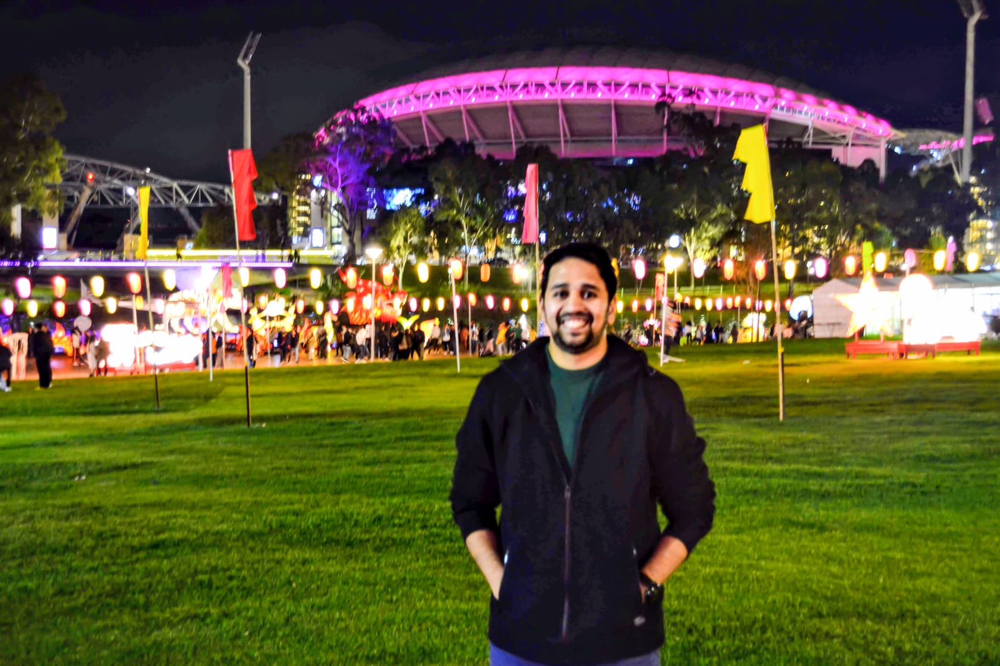

About Me
IT Desktop Support Engineer with a demonstrated history in working in the Engineering and Telecommunication industries. I hold a Master’s degree in Information Technology from Federation University, Australia.
I strive to produce best customer satisfaction; ensuring the customer needs have been met. My edge is understanding various stages and processes involved in ITIL. My strengths include excellent documentation, Problem-solving skills, communication and great attention to detail.
Working well together with clients I am friendly, supportive and helpful, providing consistent and clear communication. I enjoy taking on the responsibility of training team members, organising team meetings and contributing to problem solving initiatives. I am thorough, organised, patient, focused with attention to detail and process follow-through.